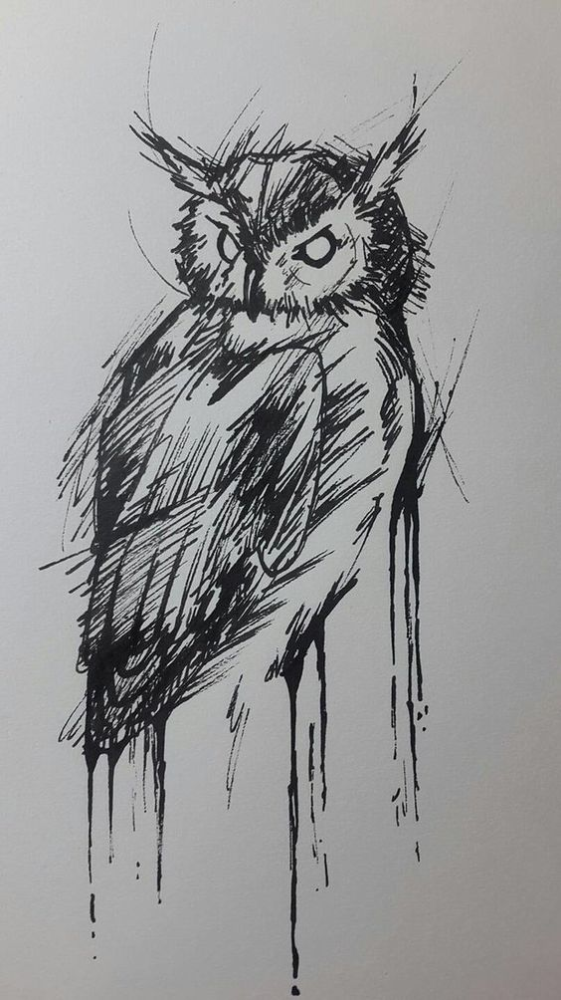

The Owl Of Knowledge
The Knowledge is the most powerfull tool humans have to change the path of their lives, a real impact helps people to understand and accept reallity, and with that information, decide if they'd preffer to live in that way for ever or change their state.
Prometheus and the light of knowledge
Since we have the chance of think in our own existence, we understood that knowledge was something that we have to take from those who try to keep it for them self and control our nature, could be goods, polititians, companies, or even people that are experts in manipulation. All of them have something in common, and is that they understand they reallity and pretend to not share that with us, regular people who don't have more intentions than living a good live.
We are no special we are not smarter, we have no more chance thant the regular population all around. And even with those limitations, if we understand and accept our reallity, we can start to take points and make a real change in our lives